Зміст

II. В яких трьох основних напрямках розвивається інформатика?
Hardware - Апаратне забезпечення
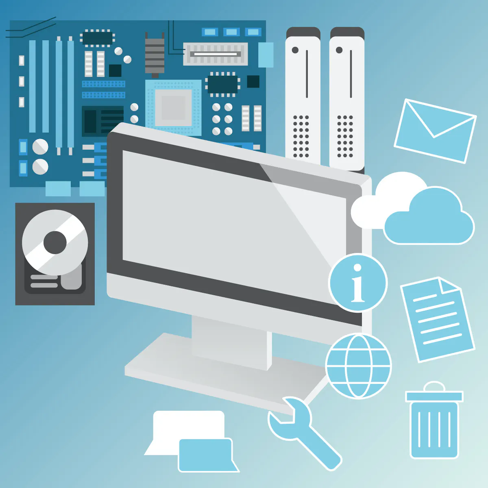Software - Програмне забезпечення
Brainware - Алгоритми, логіка
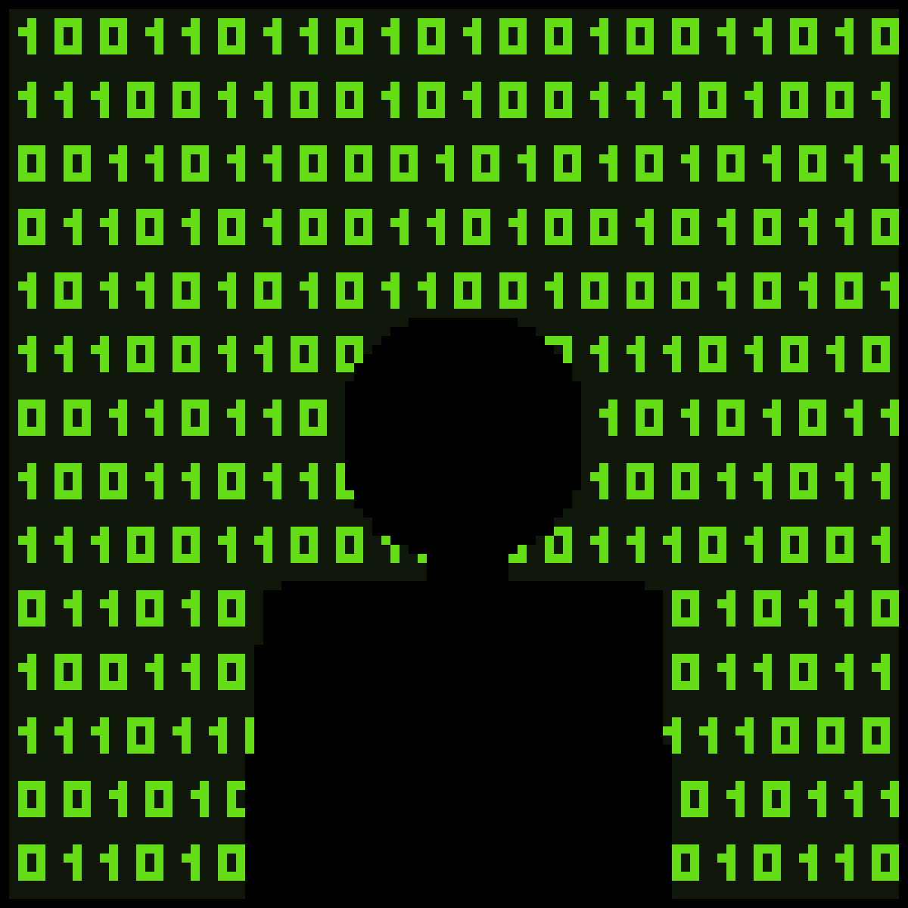Hardware
Hardware - електронні та механічні частини обчислювального пристрою. Hardware або апаратне забезпечення є одним з головних компонентом сучасного пристрою такого як комп'ютер та ноутбук. Саме за допомогою цих частин і працює все під "капотом" системного блоку таких як:
Блок живлення
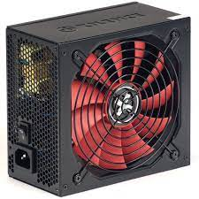Материнська плата

Процессор
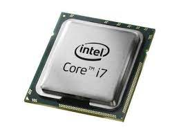Оперативна пам'ять
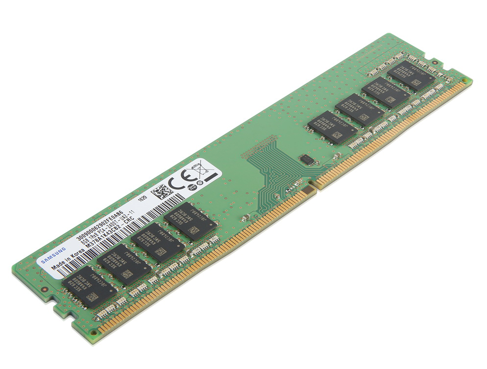Відеокарта

Жорсткий диск

Багато хто вважає, що апаратним забезпеченням є тільки ті компоненти, що знаходяться в середині системного блоку але це не так.
Hardware - це все, що входить до системи
взаємопов'язаних технічних пристроїв, мета якої – забезпечити правильне введення, обробку, зберігання та виведення інформації.
Тому це поняття охоплює, крім «внутрішнього заліза», ще й:
Клавіатура
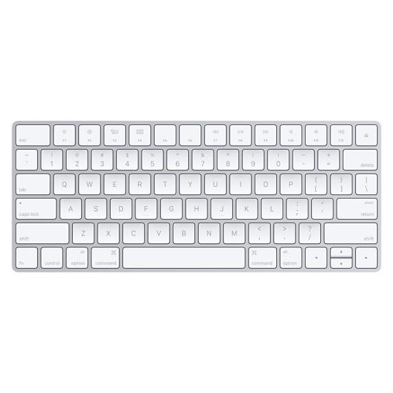Мишка

Монітор
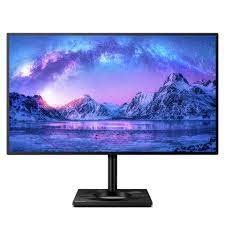Принтер

Сканер
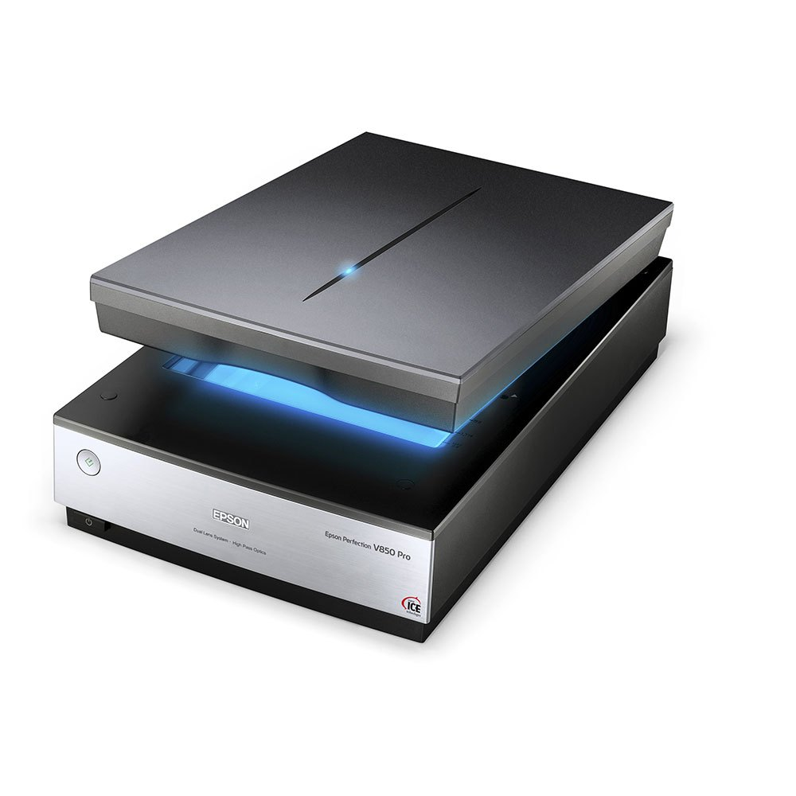USB-пристрої
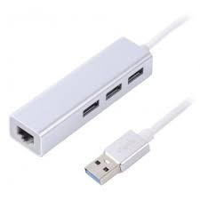Флешка
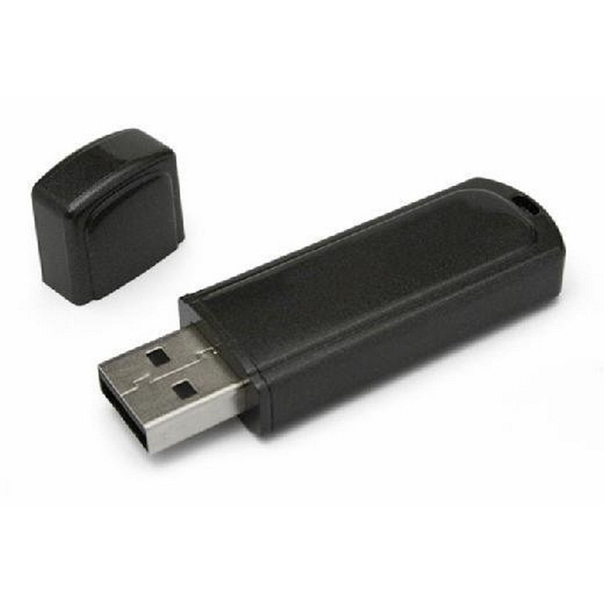І тому подібне
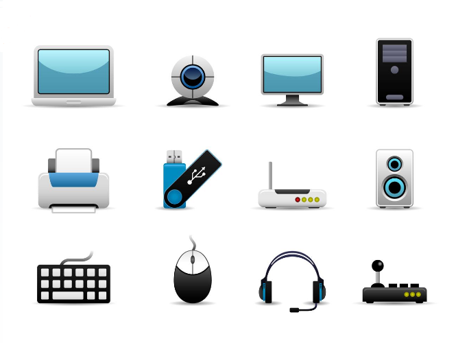Якщо говорити простими словами, Hardware - це те що можна підключити до комп'ютера та доторкнутися руками.
Software
Software - це набір інструкцій, що дозволяє користувачеві взаємодіяти з комп'ютером, його апаратною частиною, виконувати завдання. Без програмного забезпечення комп'ютери безкорисні. До прикладу без браузера ви б не змогли б відвідувати сайти, а без операційної системи не було б і браузера. Варто підмітити, що всі програми є програмним забезпеченням, но не все програмне забезпечення є програмою. Для прикладу візьмемо любий антивірус, наприклад Avast є програмою, але операційна система Windows не є програмою, але є програмним забезпеченням.
| Програмне забезпечення | Приклад | Програма? |
|---|---|---|
| Антивірус | Avast, ESET, Dr.Web | Так |
| Музичний/Аудіо плеєр | Itunes, WinAmp | Так |
| База даних | Access, MySQL, SQL | Так |
| Драйвер | Комп'ютерні драйвери | Ні |
| Клієнт електронної пошти | Outlook, Thunderbird | Так |
| Гра | Quake, Mafia II, TES: Skyrim | Так |
| Інтернет браузер | Google Chrome, Firefox, Opera | Так |
| Відео плеєр | Windows Media Player, GOM player | Так |
| Операційна система | Windows 10, Mac Os X 10, Android | Ні |
| Графічний редактор | Adobe PhotoShop, Paint | Так |
| Презентація | Microsoft PowerPoint | Так |
| Мова програмування | C++, Python, C#, C, Java, PHP, Pascal | Так |
| Табличний редактор | Microsoft Excel | Так |
| Утиліта | Стиснення, очищення диска, шифрування, очищення реєстру | Ні |
| Текстовий редактор | Microsoft Word, Sublime Text, Блокнот | Так |
Також програмне забезпечення ділиться на велику кількість класифікацій одними з яких є:
| Системне ПЗ | Програмні засоби безпеки | Інструментальне ПЗ | Прикладне ПЗ |
|---|---|---|---|
| Операційна система | Засіб аунтефікації | Cередовище розробки | Текстовий редактор |
| Утиліта | Антивірусна програма | Засіб розробки програмного забезпечення | Графічний редактор |
| Драйвер пристрою | Антиспамова програма | Систему керування базами данних | Табличний процессор |
І це тільки початок, тому нам як простим користувачам Software є дуже важливою складовою сучасного комп'ютера.
Brainware
Brainware - це термін, що характеризує алгоритми. Для позначення частини інформатики, яка пов'язана з розробкою алгоритмів та вивченням методів та прийомів їх побудови застосовують цей термін brainware. Якщо говорити більш простішими словами, то цей термін відповідає за логіку пристрою.
Тепер ви знаєте про 3 ключові напрямки інформатики.
III. Як змусили комп'ютер думати?
Які відкриття були зроблені в області обчислювальної техніки та які відкриття були зроблені в XX ст. в галузі інформатики?
Перед тим як відповідати на інші запитання, слід знати, при яких умовах і як був створений сучасний комп'ютер або електронна обчислювальна машина (ЕОМ). Взагалі, з самого початку люди створювали ЕОМ для обчислення грошей або часу. Але сучасне покоління комп'ютерів давно вже переступило через це, і відкриває зовсім більші можливості чим раніше. Еру ЕОМ умовно можна поділити на 5 поколінь.
Покоління перше
(1937-1953)
Елементною базою цих машин були електролампи, набір команд був невеликий, а програмне забезпечення було практично відсутнім. Першим комп'ютером можна сміло назвати спеціалізований калькулятор ABC (Atanasoff-Berry Computer), який був розроблений у період з 1939 по 1942 рік професором Джоном Атанасовим разом з аспірантом Кліффордом Беррі і призначався для розв'язку системи лінійних рівнянь. ABC до порівняння сучасних комп'ютерів мав дуже маленьку пам'ять всього - 312 байт. 1943 року в Англії професор Макс Ньюман розробив обчислювач Колосус (Colossus) до складу команди розробників входив також Алан Тюрінг. Колосус призначався для дешифрування кодів німецької шифрувальної машини Лоренц (Lorenz-Schlüsselmaschine).
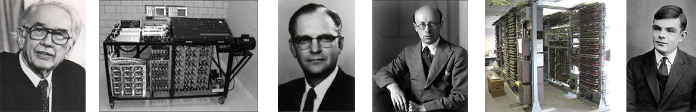
У 1946 Джон Моучлі та Преспер Еккерт створили програмований електронний калькулятор загального призначення ЕНІАК (ENIAC). ЕНІАК активно використовувався в програмі розробки водневої бомби також він важив 30 тонн і містив 18 тисяч радіоламп. 1949 року Моріс Вілкс створив ЕДСАК - електронний автоматичний комп'ютер на лініях затримки (EDSAC - Electronic Delay Storage Automate Computer). А вже наступного року під керівництвом Сергія Лебедєва були розпочаті роботи малої електронної лічильної машини або скорочено МЕЛМ. Ця обчислювальна машина була запущена в експлуатацію в 1951 році, та стала першою електронною не тільки в Україні, але й у всій Європі. МЕЛМ працювала з небувалою на ті часи швидкістю 3000 операції за хвилину. У машині були використані електронні лампи 6000 штук загальної потужністі споживання в 25кВт.
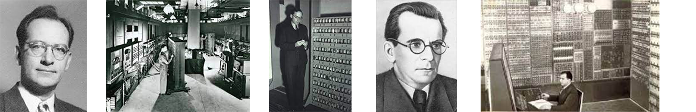
1952 рік в СРСР під керівництвом Брука була запущена ЕОМ М-1 яка містила 730 електронних ламп, оперативну пам'ять в ємністю 800 байт і мала продуктивність 15-20 операцій за секунду. Ще через в рік у 1953 році була введена в експлуатацію найбільш швидкодіюча у Європі велика електронна лічильна машина - ВЕЛМ. Яка була зроблена під керівництвом академіка Лебедіва її швидкодія становила 8-10 тисяч за секунду. 1958 рік вийшла машина М20, яка була реалізована як на лампах, так і на напівпровідникових діодах. У ній було реалізоване часткове об'єднання операцій: апаратні засоби підтримки програмних циклів та можливість паралельної роботи процесора пристрою введення. Ця ЕОМ містила оперативну пам'ять ємністю 180 кБ.
Друге покоління ЕОМ
(1954-1962)
Особливості цих ЕОМ:
1. Елементна база - напівпровідникові діоди і транзистори.
2. Пристрої пам'яті на магнітних осердях
3. Наявність у складі процесора індексних регістрів
4. У структурі ЕОМ апаратний блок обробки чисел із рухомою комою та процесорів введення/виведення
Першою ЕОМ у цьому поколінні стала Треді (TRADIC) у 1954 році. Машина складалась із 700 транзисторів і 10 тисяч германієвих діодів. 1960 створення перших супер ЕОМ, компанія IBM створила IBM 7030, того ж року компанія DEC створила перший комп'ютер PDP-1, цей комп'ютер був набагато легший, ніж його аналоги і важив приблизно в 4 рази менше, завдяки цьому і низькій ціні 120.000$ PDP-1 став широко застосуватись у різних областях: в промисловисті, в медицині, в навчальних закладах і т.д.. 22 серпня 1962 року випустили ЕОМ CDC 6600, завдяки наявності десяти незалежних функціональних блоків здатних працювати паралельно і 32-ти двох модулей пам'яті вдалося досягти швидкості в 1 млн. операцій з рухомою комою за секунду. Це найшвидший комп'ютер цього часу. 1960-го року в обчислювальному центрі УРСР була розроблена перша напівпровідникова керуюча машина широкого призначення "Дніпро".
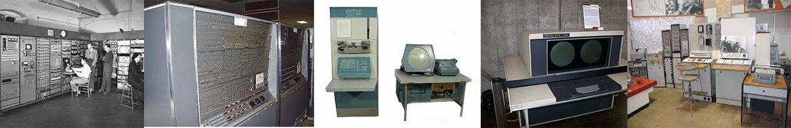Третє покоління ЕОМ
(1963-1972)
Основні властивості:
1. Перехід від дискретних напівпровідникових елементів до інтегральних мікросхем і початок застосування напівпровідникових елементів пам'яті
2. Зміни в архітектурі - мікропрограмування початок ери конвеєризації й паралельної обробки.
3. Перші операційні системи й реалізації поділу часу.
В 1964 році фірма IBM випустила серію комп'ютерів System/360. У комп'ютера цього сімейства було втілено багато нових ідей того періоду, зокрема попередня вибірка команд, окремі блоки для операцій із фіксованою рухомою комою конвеєризація команд, кеш-пам'ять тощо. До третього покоління комп'ютерів також відносяться перші паралельні обчислювальні машини Solomon та ILLIAC IV. 1965 року випущений комп'ютер PDP-8 який завдяки застосуванню інтегральних схем мав габаритні розміри невеликого холодилька, а ціну майже у двічі меншу від аналогів. 1972 року у Львівській політехніці зробили навчальну машину Пума-1.

Четверте покоління ЕОМ
(1972-1994)
Основні властивості:
1. Елементна база - інтегральні мікросхеми великого і надвеликого ступення інтеграції.
2. Застосування методів паралелізації та конвеєризації для підвищення продуктивності.
Отож 1975 року компанія DEC закінчила розробку нової моделі VAX-11, через рік був випущений комп'ютер Amdahl 470 V/6. Це був перший у світі комп'ютер четвертого покоління виконаний повністю на великих інтегральних схемах обсягом оперативної пам'яті 8 МБ, та кеш-пам'яттю 16 кБ. 1975 рік перший серійник ПК Altair 8800. Світовий лідер, саме на програмному забезпеченні для цього комп'ютера Білл Гейтс та Пол Аллан отримали свій перший великий дохід, наступного року Стів Джобс та Стів Возняк в гаражі створили ПК Apple 1, який в кількості 200 штук був проданий за ціною 666,66$, на цей час це було дуже дешево, адже найдешевші комп'ютери коштували декілька тисяч долларів. Того ж року був випущений уникальний супер-комп'ютер Cray-1, який був встановлений в ядерній лаболаторії в США. Його швидкодія становила 130 млн. операцій/с.
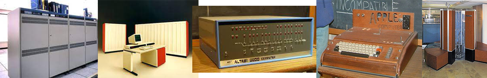1977 року було випущено Apple 2, який мав кольоровий монітор, для виведення текстової інформації, оперативну пам'ять обсягом 48 кБ та коштував у максимальній комплектації 2638$. 1982 почав випускатися домашній комп'ютер ZX Spectrum. 1984 року фірма Apple Computer випустила перший популярний комп'ютер Macintosh на базі процессорів Motorola, ще мав графічний інтерфейс, користувача та мишу, замість стандартної на той час консолі. Для цього комп'ютера Apple самостійно розробляла операційну систему MAC OS. Перший персональний комп'ютер в Україні - ПК-01 Львів, у 1985 був створений у Львові у політехнічному інституті доцентом Пуйдою Володимиром Яковичем. 1990 року початок випуску IBM System 390 та IBM zSeries z990.
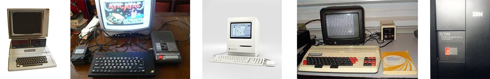Та вирішальне п'яте покоління ЕОМ
(1994-сьогодні)
У цьому поколінні акумулюються нагромаджені раніше досягнення не тільки в області мікроелектроніки, а й розвитку архітектури комп'ютерів тощо. З 2002 року почали виготовляти класнерні системи, що складаються із декількох зв'язних між собою комп'ютерів, та використовуються як єдиний. Починаючи з 2004 року технологічні досягнення мікроелектроніки дозволили розміщувати понад мільярд транзисторів на кристалі процесора. З 2008 року почали розвиватись хмарні обчислення, це парадигма, в рамках якої інформаційна постійно зберігається на серверах у мережі інтернет (наприклад Google Диск). І на кінець, сучасні розробки комп'ютерів на іншій елементній базі, що можливо замінять теперішні.
Штучний інтелект
Тепер можна давати відповідь на головне запитання цієї глави "Як змусили комп'ютер думати?" Сьогодні технології штучного інтелекту охоплюють ледь не усі сфери нашого життя і подаються як наднові досягнення науковців. Насправді поняття штучного інтелекту з’явилося ще в 1950-х, і основна проблематика з того часу змінилась не суттєво.
До 1949-го року комп’ютерам не вистачало ключового елементу для того, щоб говорити про якийсь інтелект, а саме пам’яті. Вони могли виконувати команди,
але не могли їх зберігати, так само як й інформацію про команди, які вони вже виконали. До того ж користування такими комп’ютерами було дуже дорогим
задоволенням, доступним лише найпрестижнішим університетам та великим технічним компаніям. Так, в перекладі на сучасні гроші орендувати один комп’ютер
на місяць коштувало близько $200 тис.
Тож серйозні дослідження у сфері штучного інтелекту потребували суттєвого фінансування, яке могло стати реальністю лише за наявності хоч якихось
початкових результатів у цьому напрямі, а не лише образів розумної комп’ютерної програми з наукової фантастики. Першим таким результатом стала
програма «Логічний Теоретик» (англ. Logic Theorist), яка імітувала людський підхід до розв’язання задач. Вона була представлена на науковій конференції
у Дартмутському коледжі (Нью-Гемпшир, США) у 1956 році, де власне і вигадали поняття «штучний інтелект».
1957 – 1974 роки стали періодом розквіту штучного інтелекту. Комп’ютери могли зберігати все більше інформації, ставали швидшими, дешевшими та доступнішими.
Так само, покращувались алгоритми машинного навчання – комп’ютерні програми все краще справлялись з розв’язанням задач, а в 1966 році було навіть створено
першого віртуального співрозмовника – Елізу, яка стала прототипом сучасних чатботів та віртуальних асистентів.
Перші успіхи, а також впевненість провідних вчених у великих перспективах штучного інтелекту, привели фінансування у цю галузь, в першу чергу державне.
Дослідницьке агентство при Міністерстві оборони США було особливо зацікавлене у технології розпізнавання та перекладу розмовної мови. Оптимізм та
очікування були дійсно високими. У 1965 році, Герберт Саймон, лауреат Нобелівської премії з економіки, писав: «Впродовж наступних 20 років машини навчаться
виконувати будь-яку роботу, яку може виконати людина». Інший провідний спеціаліст зі штучного інтелекту того часу, Марвін Мінський, заявив у 1970 році,
що «за 3 — 8 років у нас з’явиться машина із загальним інтелектом на рівні середньостатистичної людини».
Однак, перші успіхи алгоритмів штучного інтелекту продемонстрували і величезну кількість перешкод на шляху до реального машинного інтелекту.
Найбільшою перешкодою була недостатність обчислювальних потужностей. Наприклад, для того щоб функціонувати як віртуальний співрозмовник, машина
повинна запам’ятати значення багатьох слів і розуміти їх значення у багатьох поєднаннях. Тодішні комп’ютери не могли зберігати необхідні обсяги
інформації та обробляти їх достатньо швидко. Тож, надвисокий інтерес змінився розчаруванням, фінансування знизилось, так само як і кількість досліджень,
а період з 1974 року і до ранніх 1980-х назвали першою «зимою» штучного інтелекту.
Потім був короткий проміжок відновлення інтересу до технологій машинного навчання, коли з’явились перші експертні системи, що дозволяли машинам
імітувати процес прийняття рішень людиною-експертом, а японський та британський уряди, зацікавлені у відповідних технологіях, почали активно
фінансувати галузь. Однак, вже у 1987 році почалася друга «зима» штучного інтелекту, яка тривала до 1993 року.
Далі ж, протягом 1990-х – 2000-х років, штучний інтелект розвивався, незважаючи на відсутність державного фінансування та значної уваги суспільства.
Основна роль в розробці технологій машинного навчання перейшла на великі технічні компанії, яким вдалося досягнути помітних успіхів на шляху до розумної
машини. Так, у 1997 році комп’ютерна програма від IBM перемогла у шахи діючого чемпіона світу Гарі Каспарова. Того ж року у Windows було впроваджено
програмне забезпечення для розпізнавання мови, розроблене компанією Dragon Systems, а в 2001 році команда дослідників з MIT представила першого соціального
робота на ім’я Kismet, який вчився розпізнавати людські емоції. Здавалося, немає задач, які машинам було б не під силу розв’язати.
Справді, обмеження в обчислювальних потужностях комп’ютерів перестали бути проблемою. Відповідно до закону Мура, пам’ять і швидкість комп’ютерів подвоюється
щороку, і з певного часу обчислювальних потужностей стало достатньо для нових звершень у галузі штучного інтелекту. Саме завдяки великим обсягам пам’яті
та високій швидкості, комп’ютер зміг перемогти Гарі Каспарова у 1997 році та китайського чемпіона з шашок ґо Ке Цзе у 2017 році.
При цьому, цікаво, що самі підходи до програмування штучного інтелекту не зазнали якихось революційних змін протягом останніх 30 років.
Усі результативні впровадження алгоритмів машинного навчання, які ми можемо спостерігати у банківській справі, маркетингу, комп’ютерних іграх,
робототехніці, розробці віртуальних асистентів тощо, покладаються на величезні обсяги даних та комп’ютерні потужності, до яких ми маємо доступ сьогодні.
Таким чином, фактично, більшість нових завдань вирішуються грубою силою. До прикладу, прорив у розпізнаванні штучним інтелектом об’єктів, зображених на
картинках, стався після представлення бази даних ImageNet, яка налічує 14 мільйонів фотографій, вручну промаркованих людьми, які вказали, що за об’єкти
зображені на цих фотографіях.
Останні успіхи штучного інтелекту у сфері комп’ютерних ігор, коли машини обіграють світових чемпіонів у StarCraft та Dota 2, завдячують такому класу
алгоритмів машинного навчання як навчання з підкріпленням (англ. reinforcement learning). Ефективність цих алгоритмів фактично базується на величезних
комп’ютерних потужностях, доступних сьогодні, що дозволяють машинам симулювати десятки тисяч років комп’ютерної гри, протягом яких алгоритм навчається
на власних помилках і досягає рівня чемпіонів світу. Тобто, знову ж таки, нові завдання вирішуються в першу чергу грубою силою.
Звичайно, певні важливі інновації трапляються й досі. Так, у 2014 році було запропоновано новий клас алгоритмів штучного інтелекту – генеративні
змагальні мережі, які на сьогоднішній день дозволяють створювати штучні зображення, що практично неможливо відрізнити від реальних фотографій. У
2017 році, після представлення нової моделі глибинного навчання під назвою Трансформер, стався прорив в алгоритмах штучного інтелекту, що займаються
розпізнаванням та генерацією текстів. Машини навчились генерувати цілі статті досить змістовного і логічного тексту на задану тематику, і вже сьогодні
можна зустріти описи продуктів на сайтах і навіть рекламні слогани, створені алгоритмами штучного інтелекту.
Віртуальні асистенти спілкуються все краще, і здається, що безпілотні автомобілі – це питання найближчих років. Однак, створення справжнього штучного
інтелекту, який би за своєю універсальністю та ефективністю прирівнювався до інтелекту середньостатистичної людини, все ще залишається невирішеним
завданням. Ба більше, провідні вчені у сфері штучного інтелекту мають дуже туманні уявлення щодо того, в якому напрямку варто рухатися науці, аби врешті
наблизитися до створення розумних машин. Очевидно, що методи, якими наразі вирішуються, наприклад, завдання з розпізнавання об’єктів на картинках,
не можуть бути єдиним інструментом при створенні універсального штучного інтелекту – якщо лише для цього одного завдання знадобились мільйони вручну
зроблених маркувань, то скільки знадобиться для розв’язання усіх інших завдань, що під силу людському інтелекту?
Звичайно, вчені мають певні ідеї щодо перспективних напрямків розвитку штучного інтелекту, але поки не видно очевидного шляху до створення справді
розумних і універсальних машин. Тож, дехто вважає, що варто очікувати на чергову «зиму» штучного інтелекту, коли цікавість до цієї теми спаде, так
само як і кількість нових ідей у наукових дослідженнях. Хоча, зважаючи на те, що штучний інтелект вже має практичне застосування у багатьох сферах,
навряд чи ця тема зовсім згасне.
IV. З якими іменами пов’язане становлення інформатики як науки?
Інформатика - відносно молода наука, яка до того ж дуже швидко еволюціонує, що часто призводить до таких форм її розвитку, які були до цих нір невідомі людству. Разом з тим значення інформатики постійно зростає, оскільки інформатизація активно проникає в усі сфери діяльності людини.
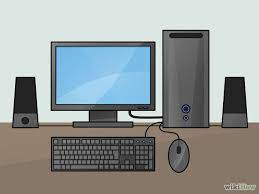Кого називають засновником інформатики?
Сказати чітко хто є засновником цієї науки - неможливо, тому що сотні людей, якщо не тисячі, вклали щось в цю сферу. Зазвичай засновниками кібернетики як науки, а відповідно й інформатики, вважають американського вченого Норберта Вінера (1894–1964). Вагомий внесок у розвиток кібернетики та інформатики зробили американський учений Клод Шеннон (1916–2001), українські вчені Віктор Глушков, який є засновником інформатики як науки в Україні, і Микола Амосов (1913–2002), відомий своїми роботами в галузі штучного інтелекту.
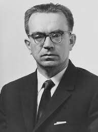3 іменами яких людей пов’язаний розвиток інформаційно-комунікаційних технологій?
Джон Атанасов та Кліффорд Беррі
Cтворили перший у світі комп'ютер (ABC)

Макс Ньюман та Алан Тюрінг
Створили обчислювач Colossus
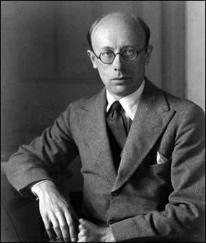

Джон Моучлі та Преспер Еккерт
Створили електронний калькулятор ENIAC
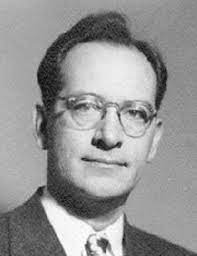

Компанії IBM та DEC
Були відповідальні за створення ЕОМ та комп'ютерів того часу
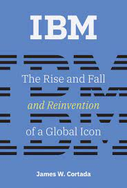
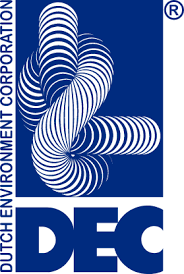
Білл Гейтс та Пол Аллен
Заснували корпорацію Microsoft, яка створює для комп'ютерів сучасне ПО

Стів Джобс та Стів Возняк
Створили одні з самих популярних комп'ютерів того часу: Apple 2, Macintosh

Моріс Вілкс
Створив електронний автоматичний комп'ютер на лініях затримки EDSAC
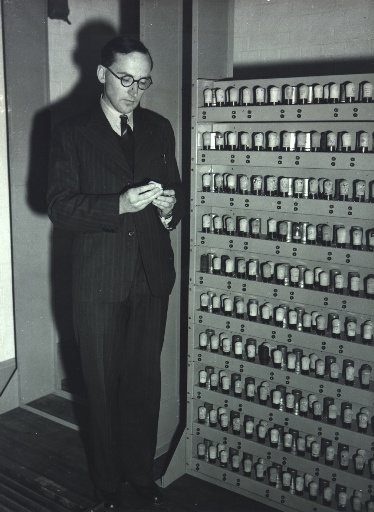
Сергій Лебедєв
Під його керівництвом була розпочата розробка малої електронної лічильної машини МЕЛМ та ВЕЛМ
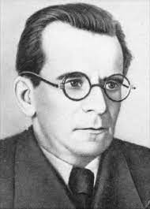
Джон Брук
Під його керівництвом була запущена ЕОМ М-1
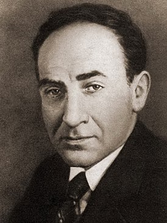
Пуйда Володимир
Під його керівництвом був створений ПК-01 Львів
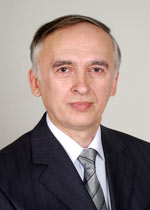